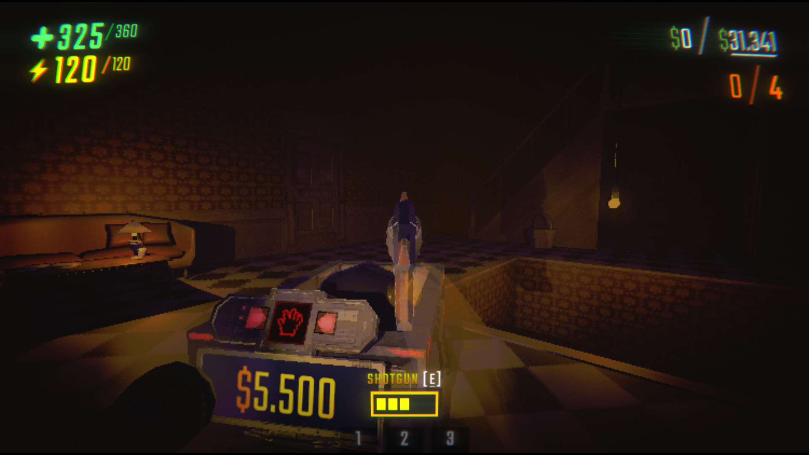
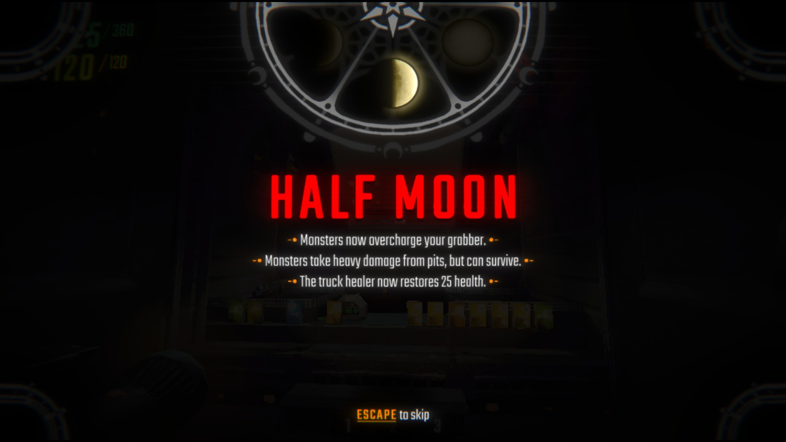

R.E.P.O Review

REPO is a game developed by semiwork and was released as an early access game on February 26, 2025, and has been until now. It's an online co-op horror game featuring physics, proximity voice chat, and scary monsters. Usually, these types of co-op games go crazy popular on their release but eventually dies down after months or even weeks. But REPO has the potential not to be like those other "flash in the pan" type games, as they say.
You see, REPO is quite similar to Lethal Company. You collect items to meet the quota while trying to survive and avoid the scary monsters. But what makes them different is that REPO is more physics-based, which helps the game to be more expressive and have fewer dull moments and create unexpected funny clips. It'll definitely give you and your friends a blast and some big laughs! Oh, don't have friends? No worries, you can actually still play this game in single-player mode, which I've done as well whenever my friends aren't available. And trust me, you'll still enjoy the game despite going solo.
Now, does the game ever get repetitive? As a gamer who has 170+ hours played on this game... Of course it does once in a while XD. I don't think you can avoid repetitiveness in these types of games, which is why you would need other commodities to spice up the game and hide the feeling of repetitiveness from the players. And REPO already does that by having unique monsters, different maps that also have their own quirky items, interesting upgrades/items to buy in the shop, and challenging mechanics. But the game definitely could be better. Despite being an early access game, it already has a solid foundation that helps maintain the game's hype, preventing it from dying eventually just like many others. If the developers play their cards right, then this game won't die for a long time.
Fortunately, the devs are doing just that and they're very interactive with the community, listening to their suggestions and taking notes of their concerns. So, they're definitely heading to the right direction. They've been adding new items, maps, and mechanics in the game. And as of writing this review, they've also announced that they're adding new monsters and more fun items and mechanics to try out, so that's great! Hopefully they'll keep this up.
"Great and funny co-op game! Definitely recommend it, as this game is really expressive and has fewer dull moments since it's highly focused on physics. Overall, the game could be better, but has a lot of potential to grow and keep the game alive and fresh with its current state."